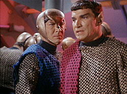
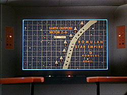
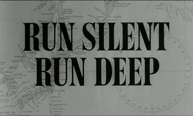
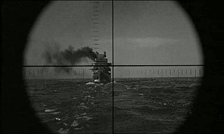
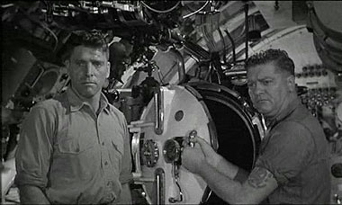

Os 40 anos de Jornada
nas Estrelas chegaram, e parece que foi ontem que tudo começou. Quatro décadas,
cinco séries de TV e dez filmes de cinema depois, é fácil
constatar o quanto Jornada nas Estrelas
esteve e está presente no nosso mundo, das mais variadas formas. Também é interessante
perceber que apesar do momento de incerteza em relação ao futuro da franquia,
no que diz respeito a sua capacidade de ser ainda uma fonte expressiva de divisas,
ela ainda agita o imaginário coletivo de milhões de pessoas em volta do globo,
e é ao mesmo tempo sintomático que a Série Clássica continue sendo ainda objeto
de estudo, análises, devoção e arrecadação.
Sinais claros disto são o sucesso da venda dos DVDs das temporadas clássicas, o aumento significativo do interesse
pela finada Enterprise em seu quarto ano, onde seus temas passaram a ser
fortemente baseados na mitologia original, e a decisão em favor de um novo projeto
cinematográfico que será, ao que tudo indica até o momento, baseado nesta mesma
mitologia.

Seguindo
a onda, ou motivada por ela, a CBS Paramount Domestic Television resolveu investir em um banho
de loja em alguns segmentos da Série
Clássica, sendo o primeiro deles, o celebre "Balance
of Terror". O segmento já foi visitado diretamente pelo TB
em duas oportunidades, sendo a primeira delas no nosso guia de episódios, analisado por Salvador
Nogueira, e em 2002, quando se discutia a então possível aparição dos Romulanos
em Enterprise. Surfando a mesma onda, o Trek Brasilis também revisita o segmento clássico.
The Beginning
Não é novidade para ninguém que o cenário de Jornada nas Estrelas (entre outras séries
sci-fi) é fortemente baseado na tradição naval. Não só no que se diz respeito
a rankings e patentes, em sua hierarquia como um todo, mas
na forma como suas naves estelares se comportam em tela, se movendo através do
espaço como se este fosse um infinito oceano. Para o bem do público em geral,
o universo virou um grande mar pelo qual viajam nossas galantes naves estelares.

Da
mesma forma, qualquer um que já tenha assistido “Balance of Terror”
já deve ter percebido que o segmento é orientado como uma perseguição, ou um enfrentamento
entre um navio de superfície (a USS Enterprise) e um submarino (a Warbird romulana).
O espectador mais atento irá perceber que o comportamento da Enterprise também
é mostrado de forma única aqui, como veremos mais tarde, de forma a se adaptar
a esta proposta.
É também dito e sabido por muitos que este episódio é fortemente
influenciado por dois filmes da década de 50, "The Enemy Below" (1957)
e "Run Silent, Run Deep" (1958). Nossa proposta aqui é conversar sobre
este dois filmes, e discutir suas similaridades com o episódio em questão. Sendo
assim, mergulhemos. Dive, dive, dive !!!

"Run Silent, Run
Deep”
Usando o Guardião da Eternidade, voltemos no tempo, para o
ano de 1958, onde faremos nossa primeira corrida silenciosa. Produzido pela MGM,
e conhecido no Brasil como “O Mar é Nosso
Túmulo”, "Run Silent, Run Deep” é baseado em uma novela de Edward L. Beach,
estrelado por Clark Gable (“Gone with the Wind”,
1939 ou “E o Vento Levou” em terras tupiniquins) e Burt Lancaster (“From Here
to Eternity”, 1953 – “A Um Passo da
Eternidade”) e dirigido por ninguém mais, ninguém menos que Robert Wise (Jornada
nas Estrelas – O Filme - 1979).
O autor, Edward L. Beach (1918 – 2002), foi oficial da marinha
durante a 2º Guerra Mundial, servindo a bordo de submarinos, onde chegou
ao comando do USS Piper ainda durante o conflito. É
fácil presumir que foi daí que Beach retirou a experiência e o conhecimento necessário
para escrever sua primeira história. No campo da ficção, ele escreveria duas seqüências
da historia original, “Dust on the Sea” (1972) e “Cold
is the Sea” (1978), além de diversos livros sobre história naval.
O Filme
Um ano após ter o seu submarino afundado por um destróier japonês
numa área conhecida como Bungo Straits, o comandante Rich Richardson (Clark Gable)
assume o comando do submarino americano USS Nerka, que está voltando de uma missão.
A bordo do Nerka está o comandante Jim Bledsoe (Burt Lancaster), que esperava
receber o comando definitivo da embarcação, e recebe a nova ordem com frustração.
Bledsoe chega a requisitar a sua transferência, mas o pedido
é negado por Richardson, e segue como primeiro oficial do Nerka. O barco retorna
ao mar, com ordens de patrulhar a “área 7”, a qual pertence Bungo Straits,
mas evitar especificamente este local, pois a marinha tem perdido vários barcos
neste local, sendo todas estas perdas atribuídas ao Destróier que afundou o barco
anterior de Richardson, o Akikaze.
Em curso, Richardson comanda uma série exaustiva de exercícios
com o objetivo de aumentar o tempo de resposta da tripulação, e evita um confronto com um submarino japonês, fatos que deixam
os tripulantes do Nerka apreensivos a respeito de seu novo capitão. Em dado momento,
o submarino avista um comboio japonês, protegido por um destróier. Richardson
ordena o ataque, que tem sucesso em destruir um navio tanque e o destróier que
protegia o comboio, graças à perícia adquirida através dos exercícios de simulação
de batalha. Com base nisto, Richardson decide caçar o Akikaze, contrariando as
ordens iniciais e com a desaprovação explicita de Bledsoe.
O Nerka localiza o Akikaze, e inicia o ataque, mas um elemento
inesperado, a cobertura aérea japonesa, faz com o que o ataque se transforme em
um fiasco. O submarino escapa com danos extensos e três tripulantes são mortos
e o próprio Richardson é seriamente ferido durante a malfadada operação. Mesmo
após estes eventos, o capitão insiste em realizar os reparos e continuar a caçada
ao Akikaze, mas Bledsoe toma o comando e ordena o retorno a Pearl Harbor.
Com os reparos finalizados, o Nerka está se preparando para
iniciar a viagem de volta, quando um programa de rádio japonês informa o afundamento
do Nerka, dando inclusive o nome de alguns tripulantes, entre eles, seus oficiais
superiores. Bledsoe percebe que os japoneses acreditam ter afundado o submarino,
e isto lhes dá uma vantagem contra o Akikaze desta vez. O Nerka parte para confrontar
o navio japonês novamente. Bledsoe usa a mesma tática imaginada por Richardson,
e desta vez tem sucesso em afundar o destróier, entretanto, eles agora descobrem
a presença de um submarino japonês que parte para confrontá-los. O Nerka evita
um ataque de torpedos, mas está incapaz de detectar o submarino inimigo.
Com Richardson de volta à ponte, junto com Bledsoe, eles decidem
emergir e atacar o que restou do comboio japonês, forçando o submarino inimigo
a se expor para tentar defender a frota. A estratégia dá certo e o Nerka localiza
e destrói o submarino japonês na superfície, e retorna a Pearl Harbor em segurança,
menos Richardson, que morre em decorrência dos ferimentos do primeiro ataque.

A Conexão
Apesar de várias vezes ser citado como inspiração para
o episodio da Série Classica, "Run
Silent, Run Deep" tem pouco a ver com “Balance of Terror”.
Tanto em termos de ação, como de construção de personagens, são duas historias
totalmente distintas, e pelo menos para o autor deste artigo, não se justifica
a comparação tão forte com o segmento clássico, mas existem
momentos que valem a pena ser destacados.
Um deles é realmente de fácil identificação com um momento
do segmento da Série Clássica. Em dado
momento, quando Nerka está sob ataque de cargas de profundidade, Richardson ordena
que os corpos dos tripulantes mortos sejam lançados ao mar, junto com destroços,
numa tentativa de iludir os atacantes. Tal ação remete diretamente a ordem do
comandante romulano interpretado pelo saudoso Mark Lenard, de lançar o corpo de
seu amigo, morto durante um dos ataques da Enterprise à ave de rapina.
Outro momento acontece logo depois que o Nerka descobre existir
um submarino japonês na área dando proteção ao comboio, e que inicia uma breve
caçada ao submarino americano. Entretanto, as cenas que se seguem remetem muito
mais a famosa briga de foice entre a Reliant e a Enterprise, em “A Ira de Khan”.
Em ambos os filmes, as duas “embarcações” envolvidas tentam localizar uma a outra
num vôo cego, onde prevalece a melhor estratégia (“Run Silent”) ou maior experiência (“A Ira de Khan”).
Por último, existe ainda uma seqüência que pode ser considerada
como “inspiradora” do episódio clássico. Após a breve escaramuça submersa, ambos
os submarinos vão à superfície novamente. O Nerka inicia um ataque ao que restou
do comboio japonês, tentando com isto expor o submarino inimigo que se verá obrigado
a defender os navios. Ao perceber o ataque, o submarino inimigo tenta se manter
entre um dos navios e o Nerka. A manobra de certa maneira lembra a
tentativa da Ave de Guerra Romulana e também da Enterprise de usarem a proteção
causada por um cometa para tentar surpreender um ao outro.
No contexto dos personagens, existe uma tensão latente entre
Bledsoe, preocupado com sua tripulação, e Richardson, obcecado pelo destróier
que teria afundado seu antigo submarino. Em Balance, esta tensão está presente
na relação Styles – Spock, embora por motivos diferentes. Apesar disto, a mecânica
envolvida é a mesma. Em "Balance",
Styles quer que Kirk ataque a ave de guerra Romulana de qualquer forma, enquanto
Spock, inicialmente reluta, até se convencer de que tal ação é necessária.
Em Run Silent, Richardson
está decidido a perseguir e atacar o Akikaze, e Bledsoe relutante, entretanto,
com o desenrolar dos acontecimentos, Bledsoe se convence de que pode ter sucesso
e ele próprio conduz o ataque aos japoneses. Em ambos os casos, tal tensão se
dissipa até não existir mais ao fim de ambos os filmes. Fora isto, o que não é pouco, mas é meramente
circunstancial, “Balance
of Terror” e “Run Silent, Run deep” são episódios totalmente
diferentes no seu restante, e as semelhanças, embora importantes, apenas confirmam
as suas diferenças.

Para quem gosta de um bom filme de Guerra, em preto e branco,
e é fã dos mitos cinematográficos, este filme é uma boa pedida, e até poderia
ser considerado uma boa inspiração para “Balance of Terror”,
se não existisse um outro filme chamado “The
Enemy Below”.
Continua aqui!